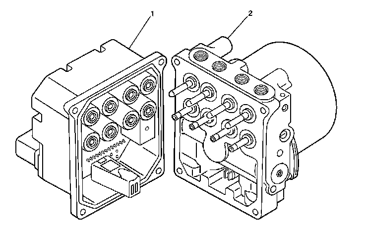
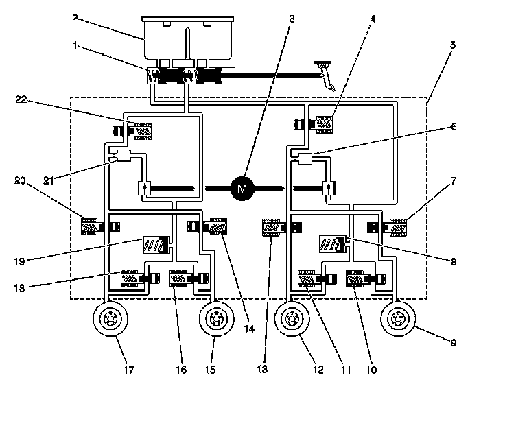

Antilock Brakes / Traction Control Systems: Description and Operation
ABS Description and Operation
EBCM and BPMV
EBCM And BPMV:

1 - Electronic Brake Control Module (EBCM)
2 - Brake Pressure Modulator Valve (BPMV)
BPMV Hydraulic Flow
BPMV Hydraulic Flow:

1 - Master Cylinder
2 - Master Cylinder Reservoir
3 - Pump
4 - Left Front TCS Valve
5 - Brake Pressure Modulator Valve (BPMV)
6 - Damper
7 - Right Rear Inlet Valve
8 - Accumulator
9 - Right Rear Brake
10 - Right Rear Outlet Valve
11 - Left Front Outlet Valve
12 - Left Front Brake
13 - Left Front Inlet Valve
14 - Left Rear Inlet Valve
15 - Left Rear Brake
16 - Left Rear Outlet Valve
17 - Right Front Brake
18 - Right Front Outlet Valve
19 - Accumulator
20 - Right Front Inlet Valve
21 - Damper
22 - Right Front TCS Valve
This vehicle is equipped with the DBC7.2 antilock braking system.
The vehicle is equipped with the following braking systems:
* Antilock Brake System (ABS)
* Engine Drag Control (EDC)
* Dynamic Rear Proportioning (DRP)
* Traction Control System (TCS)
* Vehicle Stability Enhancement System (VSES) (w/JL4)
The following components are involved in the operation of the above systems:
* Electronic Brake Control Module (EBCM) - The EBCM controls the system functions and detects failures.
The EBCM contains the following components:
- System Relay - The system relay is energized when the ignition is ON and no ABS DTCs are present. It supplies battery positive voltage to the solenoid valves and pump motor.
- Vent Tube - The vent tube, located in the EBCM connector, is an opening to the internal cavity of the EBCM. It allows ventilation of the EBCM internals.
* Brake Pressure Modulator Valve (BPMV) - The BPMV contains the hydraulic valves and pump motor that are controlled electrically by the EBCM. The BPMV uses a 4 circuit configuration with a diagonal split. The BPMV directs fluid from the reservoir of the master cylinder to the left front and right rear wheels and fluid from the other reservoir to the right front and left rear wheels. The diagonal circuits are hydraulically isolated so that a leak or malfunction in one circuit will allow continued braking ability on the other.
Important: There is a rubber isolator located under the BPMV and on the mounting studs. The rubber isolators protect the BPMV and the EBCM from vehicle vibrations.
The BPMV contains the following components:
- Pump Motor
- Inlet Valves (one per wheel)
- Outlet Valves (one per wheel)
- Master Cylinder Isolation Valves (one per drive wheel)
- Prime Valves (one per drive wheel)
* Wheel Speed Sensors (WSS) - As the wheel spins, the wheel speed sensor produces an AC signal. The EBCM uses this AC signal to calculate wheel speed. The wheel speed sensors are replaceable only as part of the wheel hub and bearing assemblies.
* Traction Control Switch - The TCS is manually disabled or enabled using the traction control switch.
* Stoplamp Switch - The EBCM uses the stoplamp switch as an indication that the brake pedal is applied.
* Lateral Accelerometer Sensor (w/JL4) - The EBCM uses the lateral accelerometer sensor as an indication of the lateral acceleration of the vehicle.
* Yaw Rate Sensor (w/JL4) - The EBCM uses the yaw rate sensor as an indication of the yaw rate of the vehicle.
* Steering Wheel Position Sensor (SWPS) (w/JL4) - The EBCM uses the SWPS as an indication of the position and rotation of the steering wheel.
Initialization Sequence
The EBCM performs 1 initialization test each ignition cycle. The initialization of the EBCM occurs when 1 set of the following conditions occur:
Both of the following conditions occur:
* The EBCM detects that there is a minimum of 500 RPM from the PCM via a serial data message.
* The stop lamp switch is not applied.
OR
Both of the following conditions occur:
* The vehicle speed is greater than 16 km/h (10 mph).
* The stop lamp switch is applied.
The initialization sequence may also be commanded with a scan tool.
The initialization sequence cycles each solenoid valve and the pump motor, as well as the necessary relays, for approximately 1.5 seconds to check component operation. The EBCM sets a DTC if any error is detected. The initialization sequence may be heard and felt while it is taking place, and is considered part of normal system operation.
The EBCM defines a drive cycle as the completion of the initialization sequence.
Antilock Brake System
When wheel slip is detected during a brake application, the ABS enters antilock mode. During antilock braking, hydraulic pressure in the individual wheel circuits is controlled to prevent any wheel from slipping. A separate hydraulic line and specific solenoid valves are provided for each wheel. The ABS can decrease, hold, or increase hydraulic pressure to each wheel brake. The ABS cannot, however, increase hydraulic pressure above the amount which is transmitted by the master cylinder during braking.
During antilock braking, a series of rapid pulsations is felt in the brake pedal. These pulsations are caused by the rapid changes in position of the individual solenoid valves as the EBCM responds to wheel speed sensor inputs and attempts to prevent wheel slip. These pedal pulsations are present only during antilock braking and stop when normal braking is resumed or when the vehicle comes to a stop. A ticking or popping noise may also be heard as the solenoid valves cycle rapidly. During antilock braking on dry pavement, intermittent chirping noises may be heard as the tires approach slipping. These noises and pedal pulsations are considered normal during antilock operation.
Vehicles equipped with ABS may be stopped by applying normal force to the brake pedal. Brake pedal operation during normal braking is no different than that of previous non-ABS systems. Maintaining a constant force on the brake pedal provides the shortest stopping distance while maintaining vehicle stability.
Pressure Hold
The EBCM closes the inlet valve and keeps the outlet valve closed in order to isolate the system when wheel slip occurs. This holds the pressure steady on the brake so that the hydraulic pressure does not increase or decrease.
Pressure Decrease
The EBCM decreases the pressure to individual wheels during a deceleration when wheel slip occurs. The inlet valve is closed and the outlet valve is opened. The excess fluid is stored in the accumulator until the return pump can return the fluid to the master cylinder.
Pressure Increase
The EBCM increases the pressure to individual wheels during a deceleration in order to reduce the speed of the wheel. The inlet valve is opened and the outlet valve is closed. The increased pressure is delivered from the master cylinder.
Engine Drag Control (EDC)
When the driver releases the throttle, and the drag from the engine overcomes the frictional force between the tire and the road, EDC becomes active.
The EBCM sends a torque request signal to the PCM, which increases the torque at the wheels. This stabilizes the wheels by reducing the slip at the driven wheels.
When EDC is active, the driven wheels are controlled to a target below the non-driven wheels.
Dynamic Rear Proportioning (DRP)
The dynamic rear proportioning (DRP) is a control system that replaces the hydraulic proportioning function of the mechanical proportioning valve in the base brake system. The DRP control system is part of the operation software in the EBCM. The DRP uses active control with existing ABS in order to regulate the vehicle's rear brake pressure.
The red brake warning indicator is illuminated when the dynamic rear proportioning function is disabled.
Traction Control System (TCS) (NW9)
When drive wheel slip is noted while the brake is not applied, the EBCM will enter traction control mode.
First, the EBCM requests the PCM to reduce the amount of torque to the drive wheels via the requested torque signal circuit. The PCM reduces torque to the drive wheels by retarding spark timing and turning off fuel injectors. The PCM reports the amount torque delivered to the drive wheels via the delivered torque signal circuit.
If the engine torque reduction does not eliminate drive wheel slip, the EBCM will actively apply the drive wheel brakes. During traction control braking, hydraulic pressure in each drive wheel circuit is controlled to prevent the drive wheels from slipping. The master cylinder isolation valve closes in order to isolate the master cylinder from the rest of the hydraulic system. The prime valve then opens in order to allow the pump to accumulate brake fluid in order to build hydraulic pressure for braking. The drive wheel inlet and outlet solenoid valves then open and close in order to perform the following functions:
* Pressure hold
* Pressure increase
* Pressure decrease
ABS Indicator
The IPC illuminates the ABS indicator when the following occurs:
* The electronic brake control module (EBCM) detects a malfunction with the antilock brake system. The IPC receives a class 2 message from the EBCM requesting illumination.
* The IPC performs the displays test at the start of each ignition cycle. The indicator illuminates for approximately 5 seconds.
* The IPC detects a loss of class 2 communications with the EBCM.
Traction Control System Indicator
TRAC OFF
The IPC illuminates the TRAC OFF indicator when the following occurs:
* The electronic brake control module (EBCM) inhibits the traction control system due to a malfunction in the traction control system. The IPC receives a class 2 message from the EBCM requesting illumination.
* The rear integration module (RIM) detects that the traction control switch has been pressed (signal circuit is low). The RIM sends a class 2 message to the EBCM in order to disable traction control. The IPC receives a class 2 message from the EBCM requesting illumination. The RIM sends a class 2 message to the radio in order to activate an audible warning.
Vehicle Stability Enhancement System (VSES)
The vehicle stability enhancement system (VSES) adds an additional level of vehicle control to the EBCM.
Yaw rate is the rate of rotation about the vehicle's vertical axis. The VSES is activated when the EBCM determines that the desired yaw rate does not match the actual yaw rate as measured by the yaw rate sensor.
The desired yaw rate is calculated from the following parameters:
* The position of the steering wheel
* The speed of the vehicle
* The lateral, or sideways acceleration of the vehicle
The difference between the desired yaw rate and the actual yaw rate is the yaw rate error, which is a measurement of oversteer or understeer. If the yaw rate error becomes too large, the EBCM attempts to correct the vehicle's yaw motion by applying differential braking to the appropriate wheel. The amount of differential braking applied to the left or right front wheel is based on both the yaw rate error and side slip rate error.
The VSES activations generally occur during aggressive driving, in turns or on bumpy roads without much use of the accelerator pedal. When braking during VSES activation, the pedal pulsations feel different than the ABS pedal pulsations. The brake pedal pulsates at a higher frequency during VSES activation.